Introducing AI Agents to Healthcare
Driving Adoption in One of the Most High-Stakes Industries
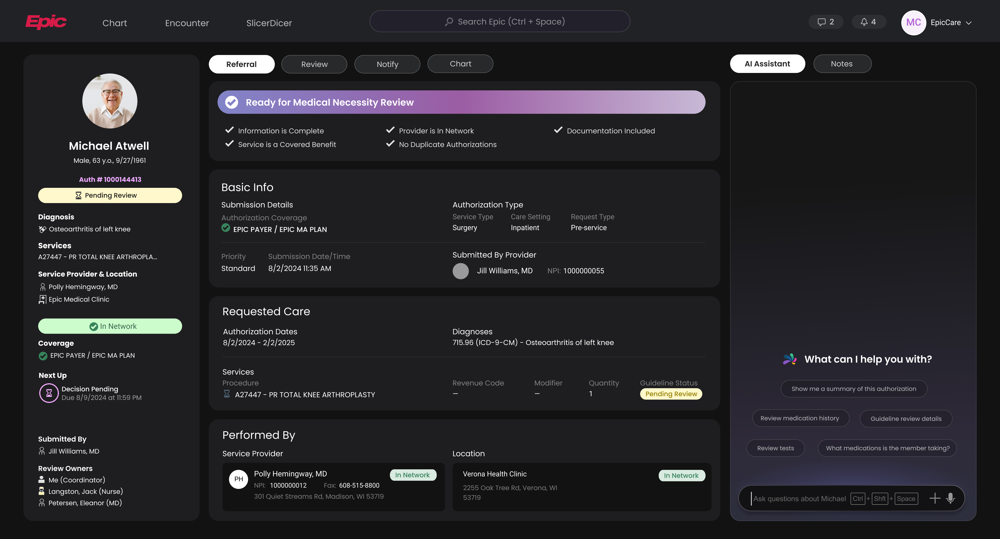
Helping an enterprise company adopt AI by designing agent experiences that increase efficiency and create measurable business value.
For decades, Epic built its reputation on reliability, accuracy, and trust within healthcare. As AI began reshaping the software industry, the challenge was how to introduce it into high stake healthcare workflows without compromising user trust.
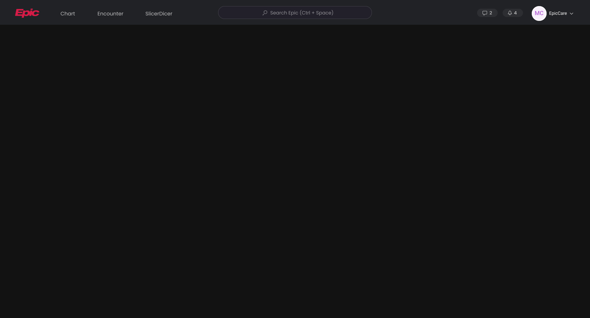
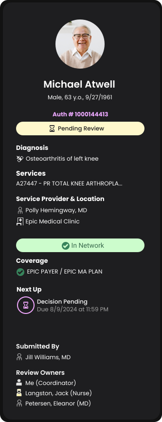
Patient Demographics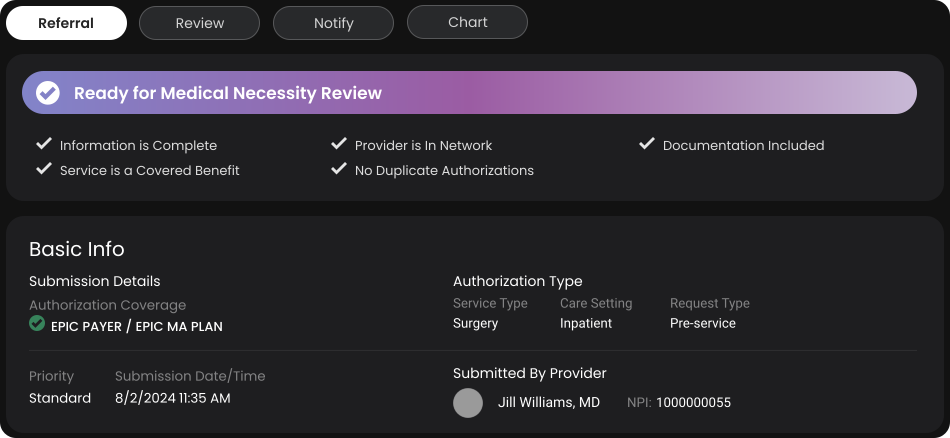
Auth Information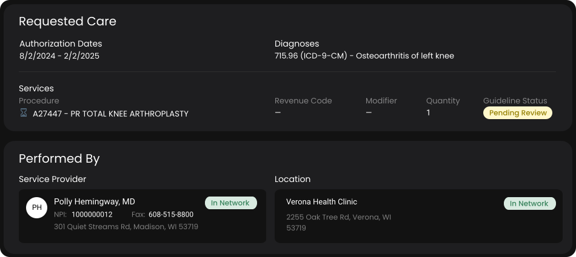
Service Information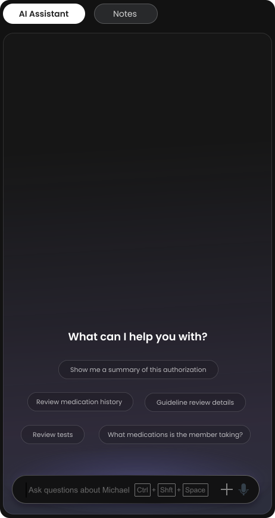
AI AssistantResearch
Traditional Auth Review workflows require redundant manual work
MDs were slowed down by excessive patient data, increasing review time for escalated authorization cases and creating unnecessary operational bottlenecks.
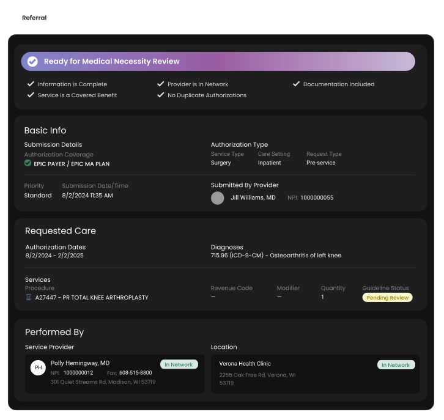
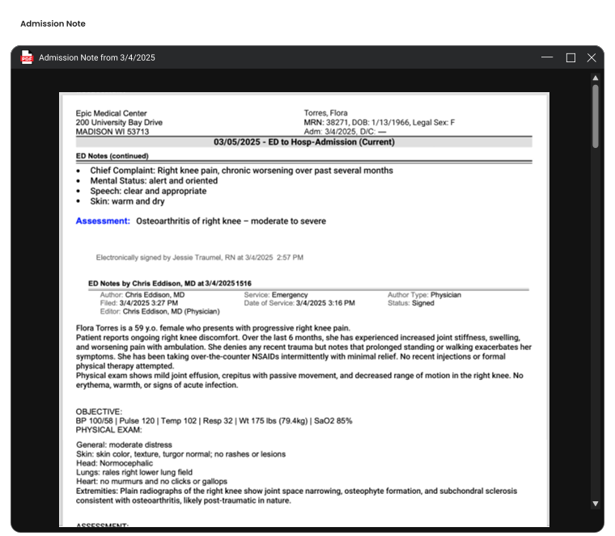
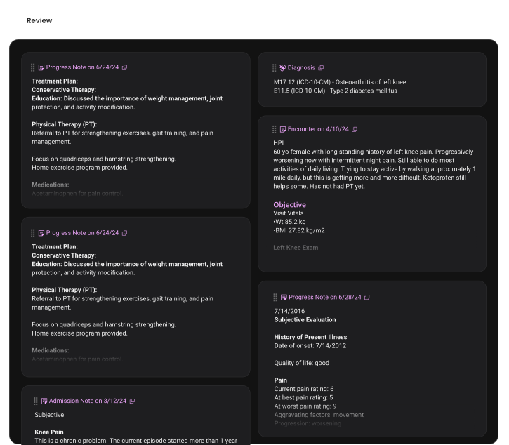
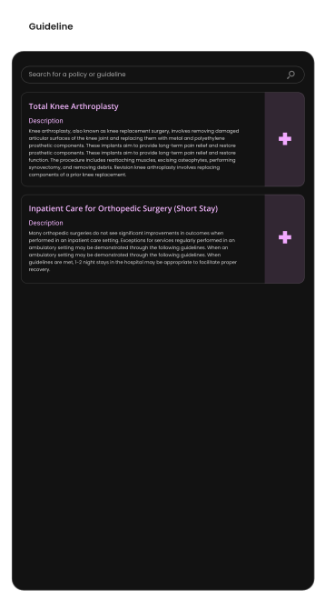
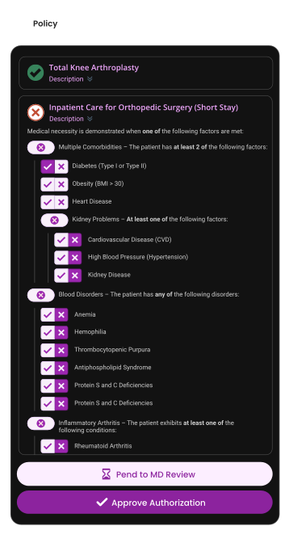
Information-surfacing
First, leveraging AI’s skills to surface the information that matters
Reframing AI into an information-surfacing agent that extracts relevant clinical evidence, improving MD efficiency without compromising clinical authority or regulatory trust.
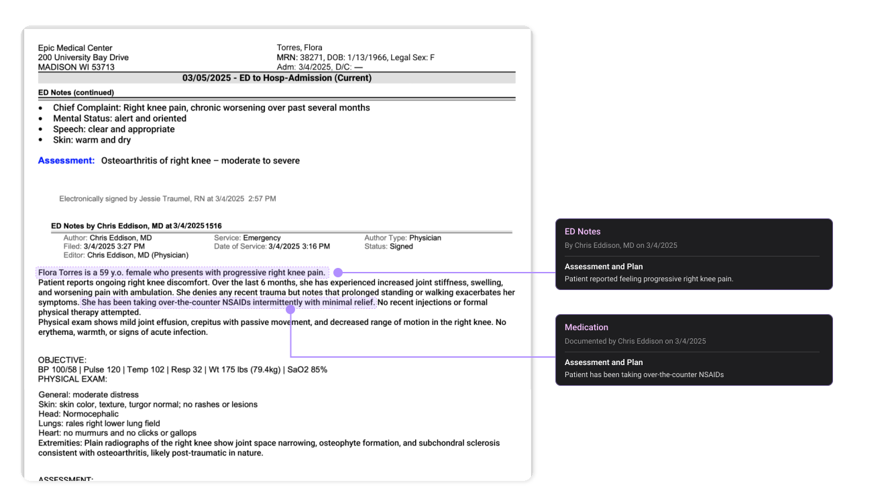
Trust
Building trust, a crucial cornerstone of healthcare tools
Validated AI agent usability and adoption readiness through iterative testing with leadership, internal AI teams, and end users, confirming strong interest but high sensitivity to trust and transparency.
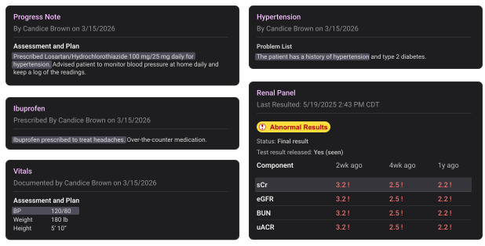
AI Evidence Citation
There are 18 types of clinical evidence, from Progress Notes, Lab Results, Vitals, to Call Transcripts, and Medications. We spent three months fleshing out a design system to ensure all evidence is cited in the most accurate and clear manner.

AI-Training to ensure User Experience
We must ensure the language AI uses is strictly regulated in a clinical setting. This involved many rounds of training and testing while I work with engineers to polish prompts and knowledge base.
Development
Accelerating development through cross-team collaboration
Rather than building from scratch, I identified parallel AI efforts across Epic and collaborated with another team that had already shipped summarization capabilities. This reuse strategy significantly reduced implementation effort and accelerated prototype delivery for stakeholder review.

Building Subagent Workflow
Designing a multi-agent system that reuses existing subagents in the company to achieve out goal faster.
FINAL DEMO
A Scalable AI UX Framework for Healthcare Workflows
Established a scalable UX foundation for AI agent integration in healthcare authorization systems, balancing efficiency gains with regulatory constraints and user trust requirements, enabling future AI expansion across Epic products.
Outcomes
Early feedback and a plan to measure long-term impact
This is a north star project with a development timeline of at least three years, so opportunities for hands-on user testing are still limited. Our feedback so far comes primarily from qualitative research through interviews. Twice a year, we hold major user group meetings to showcase projects planned for upcoming releases, where we have received positive feedback from major insurance companies.
Test Plans
We have already developed a testing plan to evaluate the AI agent across three dimensions as development and adoption progress:
Confidence Level
Observe how often users manually verify the data retrieved by the AI agent to understand their confidence in its results.
Measure: frequency of manual verification
Data Accuracy
Run A/B tests with and without the AI agent to compare whether users retrieve the same clinical data and assess the accuracy of AI-assisted retrieval.
Compare: retrieval with and without AI
Long-Term Trend
Track changes throughout adoption to evaluate whether AI automation saves time and enables higher accuracy over time.
Track: time saved and accuracy over adoption